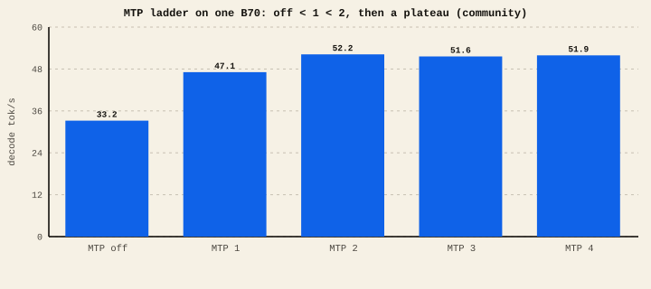

The short version
- MTP lets the model guess several next tokens at once, then verify them in one pass. Accepted guesses are free speed.
- The number (1/2/3/4/5) is how many tokens it drafts ahead. More drafts = more potential speed, but also more wasted work when guesses miss.
- The community GPTQ curve bent near MTP 2; our current AutoRound INT4 nightly regressed at every tested depth. There is no universal knee.
- Done right, target-verified MTP is lossless: the output is exactly what the target model would have produced anyway.
- Runtime, quantization, graph mode, concurrency, and draft depth all change the result; validate the exact combination you serve.
How it works
Normal decoding writes one token per pass through the model — and each pass is bandwidth-bound, so the GPU spends most of it waiting on memory. MTP puts that idle time to use: a small, cheap "draft" head proposes the next few tokens, and then the full model checks them all in a single pass. Every draft token the full model agrees with is a token you got almost for free.
The key number is acceptance length — how many drafted tokens survive verification on average. High acceptance means MTP is winning; low acceptance means you're paying to draft tokens that get thrown away.
MTP only accepts a drafted token if it matches what the full model would have chosen. Rejected guesses are discarded. So a correct MTP implementation produces the same output as plain decoding — it just gets there faster. That's the difference between speculation (this) and a smaller/worse model (not this).
The ladder, measured
A community single-B70 run swept the whole ladder on Qwen3.8-27B (vLLM XPU, fp8 KV): Community
Decode tok/s vs MTP depth

| Setting | tok/s | vs off | Source |
|---|---|---|---|
| MTP off | 33.2 | — | Community Reddit, GPTQ |
| MTP 1 | 47.1 | +42% | Community |
| MTP 2 | 52.2 | +57% | Community |
| MTP 3 / 4 | 51.6 / 51.9 | +55% | Community |
| AutoRound INT4, MTP 5, two cards | 101.2 | research | Lab not promoted (determinism open) |
| AutoRound INT4, one card, MTP off (XPU graph on) | 30.2 | — | Lab-measured vLLM XPU nightly, TP1 |
| AutoRound INT4, one card, MTP 1 / 2 / 3 | 4.5 / 4.4 / 4.3 | −81% | Lab-measured drafts accepted fine; the verify step is what's slow |
Why the knee moves
The sweet spot isn't always 2. It depends on acceptance length, which depends on the model, the weights, and the prompt. The same-family GPTQ weights in one archived run kept climbing to MTP 4 (54 → 68 → 84 tok/s) because their drafts were accepted more often; the Reddit run plateaued at 2. The rule isn't "always pick 2" — it's:
- Each extra draft token adds cost whether or not it's accepted.
- It pays off only while the added acceptance outweighs that cost.
- Predictable text (code, structured output) accepts more, pushing the knee higher; creative text accepts less, pulling it lower.
And the knee can sit below "off" entirely. Our own lab sweep of the same ladder — same model family, one card, but AutoRound INT4 weights instead of GPTQ — measured MTP losing to plain decode five-fold (24 → 4.5 tok/s) even though 91% of drafts were accepted. The drafting was fine; the verification forward pass was hitting a slow kernel path for that quant format. Speculative decoding multiplies whatever your verify step costs, so one slow kernel can flip the whole ladder negative.
Sweep it once for your workload — including "off". Compare the depths your exact runtime supports and keep whichever passes both speed and output gates. Engine boot and graph compilation can take much longer than the requests themselves, and "off wins" is a real possible answer.
- Both runtime families can speculate. vLLM XPU has native Qwen MTP lanes; llama.cpp SYCL has validated model-specific MTP and draft-model lanes. Support depends on the exact weights, draft artifact, and build. See Runtimes.
- Concurrency can crash some lanes. One tested hybrid vLLM setup required
--max-num-seqs 1with MTP. That finding is not a blanket limit for every Qwen quant or runtime. - Verify it's actually lossless. A broken speculative setup can change output. Check your MTP result against a plain-decode answer on a known prompt before trusting it — that's exactly why our own high MTP numbers stay in the research lane until determinism is nailed down.
- Don't combine MTP with XPU graph mode. On the current vLLM XPU nightly, graph capture plus MTP produced zero accepted drafts and wrong outputs on every test prompt. Graph mode without MTP was fast and faithful; the combination is the bug.
- The ladder depends on your quant format's kernels, not just the model. GPTQ weights climbed the ladder on one card; AutoRound INT4 weights collapsed on the identical ladder because their verify kernels are slow at speculative batch shapes. Measure on your weights.
Compare an exact-deployment MTP arm with MTP off; keep MTP only when it improves the workload and preserves target output. On the current AutoRound nightly, graph-on with MTP off is the valid fast path. Treat concurrency and graph composition as separate gates rather than inherited defaults.